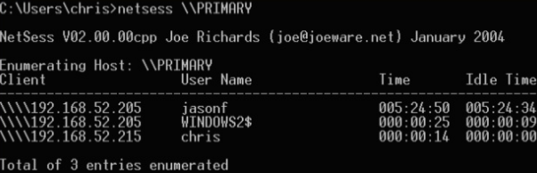

Component of joeware.net/freetools
Uses the NetSessionEnum API call
msdn.microsoft.com/en-us/library/windows/desktop/bb525382(v=vs.85).aspx
Basically version of "net session" that works on remote machines
Greate for targeting file servers
No admin privs needed!
netsess \\PRIMARY
